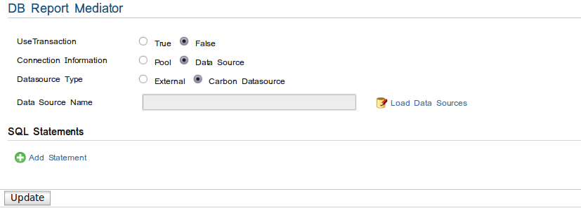

DB Report Mediator
The dbreport mediator is very similar to the dblookup mediator, but writes information to a Database, using the specified insert SQL statement.
DBReport mediator options

Figure 1: DBReport options
- Connection Information - Specify whether the connection is taken from a connection pool or from a data source
- Driver - Database driver
- Url - JDBC URL of the database that data will be looked up.
- User - Username that's used to connect to the database.
- Password - Password used to connect to the database.
Data sources
Carbon Datasource
If existing Carbon data source is chosen, clicking "Load Data Sources" will give the available datasource. Then a data source can be selected.
Figure 2 : Existing Datasources
External
Like in Pool connection data source configuration properties should be specified.

Figure 3: External Datasources
Adding properties
Properties can be add to the DBReport Mediator by clicking Add Property, then the configuration UI appears.

Figure 4: Adding a property
Property field descriptions,
- autocommit = true | false
- isolation = Connection.TRANSACTION_NONE | Connection.TRANSACTION_READ_COMMITTED | Connection.TRANSACTION_READ_UNCOMMITTED | Connection.TRANSACTION_REPEATABLE_READ | Connection.TRANSACTION_SERIALIZABLE
- initialsize = int
- maxactive = int
- maxidle = int
- maxopenstatements = int
- maxwait = long
- minidle = int
- poolstatements = true | false
- testonborrow = true | false
- testwhileidle = true | false
- validationquery = String
Adding SQL statements
- SQL Statements can be added by clicking Add Statement link.
- More than one statement may be specified.
- The SQL statement may specify parameters which could be specified as values or XPath expressions.
- The types of parameters could be any valid SQL types. Only the first row of a result set will be considered and any others are ignored.

Figure 5: Adding SQL statements